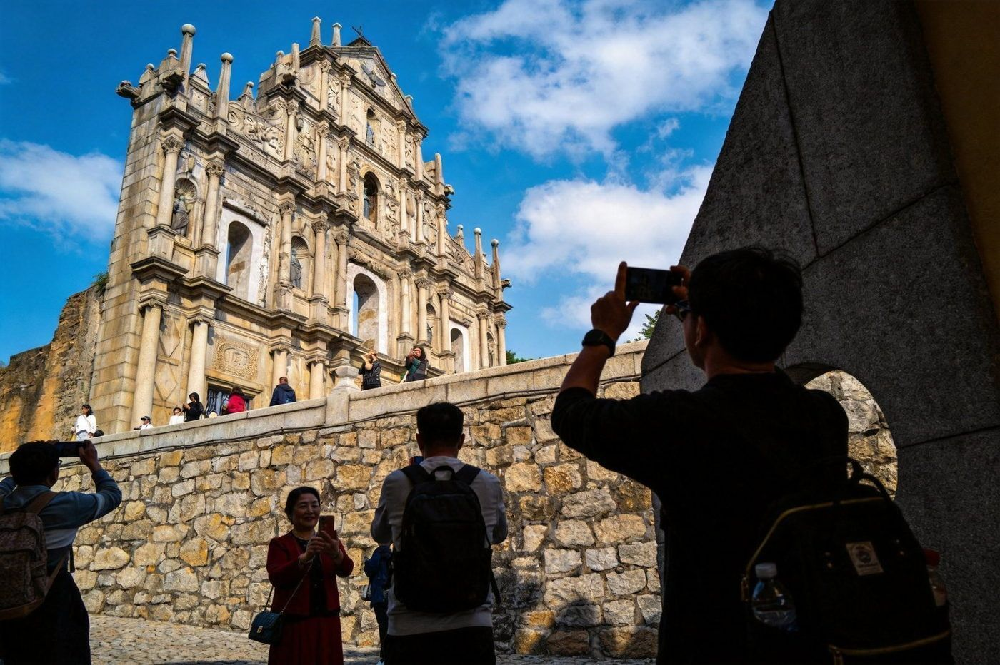
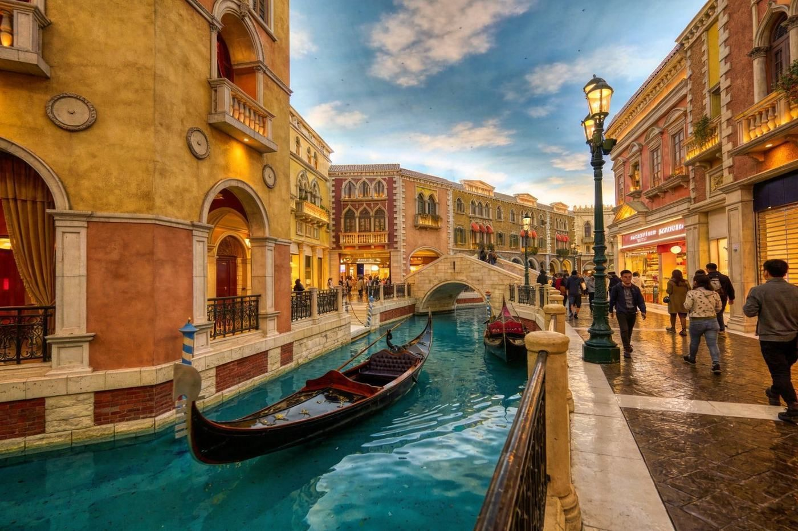
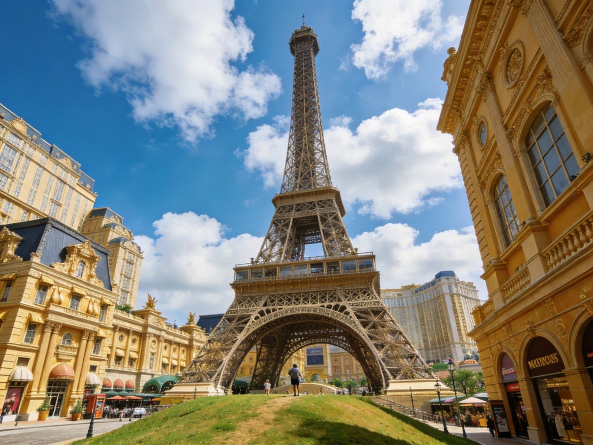

🎰 澳门 · MACAO VIA ZHUHAI
珠海 → 澳门 · 过关与玩法全攻略
澳门和一海之隔，珠海就是最佳桥头堡：多口岸可过关、免费“发财车”接着跑，一天能打卡大三巴、尝遍蛋挞牛杂，两天能玩遍半岛历史城与氹仔度假区。
🚶 从珠海进出最方便
🆔 需港澳通行证+有效签注
💰 澳门元MOP / 港币通用
🗺️ 半岛古城 + 氹仔度假区
🛂从珠海怎么过关去澳门
珠海到澳门的 4 个主要口岸，选对能省不少排队时间。
珠海 → 澳门口岸对比
| 口岸 | 通关时间 | 位置/特点 | 适合 |
|---|
| 拱北口岸 | 6:00–次日1:00 | 香洲区昌盛路 · 珠海最繁忙、连接关闸 | 地铁/公交+出关即巴士总站，适合大多数人，步行过关 |
|---|
| 青茂口岸 | 24小时 | 香洲区国防路99号 · 通关快（约30秒） | 只支持电子通行证（不支持护照），24小时往来快选 |
|---|
| 横琴口岸 | 24小时 | 横琴新区 · 合作查验一次放行 | 过横琴直接到澳门氹仔/路凼，适合近长隆与度假区 |
|---|
| 湾仔口岸（乘船） | 7:00–22:00 | 湾仔 · 坐船约5分钟 · 约25元/人 | 想乘船体验、直接到澳门内港附近 |
|---|
⏰ 重要提醒：从珠海去澳门需提前办好「往来港澳通行证 + 有效澳门签注」。日均过关人流大，早高峰（约8-10点）与周末较挤，建议错峰或选青茂/横琴。
🧭澳门怎么玩 · 一日 / 两日建议
两条常走路线：适合“特种兵”的一日精华，和想看透古与奢的两日版。
🚩 一日精华（半岛历史城 + 氹仔度假区）
-
过关 → 坐“发财车”/公交
过关后乘免费酒店穿梭巴士（发财车）进城
发财车覆盖口岸、酒店、主要景点，是澳门省钱自由行的大杀器。
-
上午 · 大三巴牌坊 + 恋爱巷
澳门地标世遗 · 拍照打卡 · 免费
大三巴是圣保禄教堂正面前壁遗址，形似牌坊，很值得一看；旁边的恋爱巷、议事亭前地（葡式碎石广场）顺路逛。
-
中午 · 议事亭前地 + 葡式小吃
蛋挞 · 牛杂 · 猪扒包 · 手信
议事亭前地黑白波浪碎石地面很有葡式风情；午饭选本地老字号蛋挞/牛杂/猪扒包都不贵。
-
下午 · 氹仔度假区（威尼斯人/巴黎人/伦敦人/官也街）
人造运河贡多拉 · 度假区逛街
威尼斯人室内运河、巴黎人铁塔、官也街小吃都在氹仔，坐发财车过去很方便；想小赌体验的注意 21 岁年龄限制与提醒理性。
-
傍晚 · 返回珠海
坐发财车/公交回口岸过关
留意所选口岸通关时间（如拱北夜间 1 点闭关），别误了末班。
🌙 两日版（看透古与奢）
-
DAY 1 · 澳门半岛历史城
大三巴→恋爱巷→议事亭前地→玫瑰堂→大炮台（俯瞰城区）
澳门半岛集中了世遗历史城区，步行为主一天能走完；大炮台登顶看新葡京与老城同框。
-
DAY 2 · 氹仔度假区 + 路环
威尼斯人/巴黎人/伦敦人 → 官也街小吃 → 路环静谧渔村
第二天泡在氹仔度假区逛街拍照，再去路环海边走走、吃葡挞，节奏更松弛；澳门住一晚也不贵（一样有¥150-400档）。
📍必打卡 · 单独看图
两个最具辨识度的点。

大三巴牌坊 · 澳门地标
大三巴牌坊 · 不可错过的世遗地标
天主教圣保禄教堂正面前壁的遗址，因形似中式牌坊而得名，是澳门最具代表性的地标。免费开放，建议上午早去避开人流，站在石阶上仰拍背景干净。

威尼斯人 · 人造水城
澳门威尼斯人 · 室内运河与贡多拉
氹仔度假区人气打卡点，仿威尼斯水城而建的室内运河，可坐贡多拉小船，配合巴黎人铁塔、伦敦人英伦风，白天黑夜都出片。金沙度假区各场馆免费入内逛。

巴黎人铁塔 · 氹仔度假地标
澳门巴黎人铁塔 · 远眺巴黎风情
氹仔巴黎人度假村内的仿巴黎埃菲尔铁塔（约 1/2 比例），白天铁塔与欧式建筑在阳光下鎏金生辉，入夜灯光璀璨是澳门夜景打卡地；可购票登塔俯瞰氹仔与路凼城景。
💡实用贴士
证件
港澳通行证 + 有效签注
内地居民过关必备，签注要记得提前到出入境窗口/自助机办理。
货币
澳门元 / 港币通用
小额现金备一些，大额可刷卡/手机支付；商家多数找零给澳门币。
交通
免费“发财车”+ 公交
发财车串起口岸与酒店，公交 6 澳门元/次（可用 wx 乘车码），市内出行基本不花什么钱。
提醒
娱乐场 21 岁 + 理性
赌城玩法需满 21 岁；无论何种体验，请理性消费、量力而行，勿痴迷。